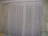
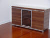
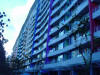
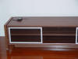
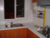
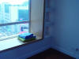
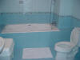

{kind=link}

Hi all my friends and families,
It has been quite some
time from the time I bought the new apartment in early 2001. After waiting for one years and
re-modeling for two months, I finally moved into the new apartment. During the
course, I received a lot of emails and phone calls asking me about the progress.
Thank you for that. For others who are just visiting this web site during
surfing, I believe this is also a very good chance for you to learn a
typical apartment in Shanghai and get some idea of living in Shanghai if you
haven't been to Shanghai or China yet.
|
 |
 |
 |
 |
 |
| Bedroom | Dining Room | Garden | Guestroom | Kitchen |
|
 |
 |
|||
| North View | Reading Room | South View | Washroom |
My apartment in Vanke Waltz Garden is in Xu Hui District. It is located in southwest part of Shanghai downtown. It is 3.3 KM to the crowded and busy Xu Jia Hui Square, where I work. It is 500 meters west of Cao Bao Road Metro Station of Metro Line #1. I feel the place is very good for me since it costs only 13 RMB ($1.6) to get to Xu Jia Hui and 20 RMB ($2.4) to my favorite part of Shanghai - the Shanghai Center. For me, the most frequently used transportation is Bus No.43, which connects Shanghai Normal University, my home, Xu Jia Hui Square (as I said, I work there) and Nan Pu Bridge. The bus stop is right at the entrance of the garden.
The apartment is 98 square meters with two bed rooms, one guestroom, one dining room. Kitchen, washroom and two platforms on both side are included.
We call it decoration, but most western people call it re-modeling. Now I also call it re-modeling, since it is not as easy as decorate with pictures and flowers. I removed a small piece of wall, decorated the kitchen and restroom with tiles and had all the rooms paint in white. I paid workers to install cabinet in kitchens and install all the electronic appliance. I also bought all the lights and furniture by myself. The whole project cost me more than two months.
First is the property management company from Vanke. I have to say I am very
satisfied with the service the provide. The security and the cleaning staff are
very professional and provide good service. The second is the view. Looking
northward, I can see the whole garden with trees, grassland, a small lake and
springs. There are lot of residential building in the far landscape. It is the
famous Tian Lin area, a convenient and comfort area living area for mid-class in
Shanghai.
There is a little basket ball field right in front of the building I am living.
Due to space limitation, it is half of the full size field. there are two 24x7
stores (LAWSON and C-Store) at the 1st floor of the building, along them are 3
coffee shop, 4 beauty salons, one medicine shop and some real estate agencies.
It is very convenient for me.
However, since it is near the busy Cao Bao Road, noise and dust are major
concerns.
Now, I will show you around the apartment. Click the links to see pictures.
Bed Room of My Home
Dining Room of My Home
Guest Room of My Home
Kitchen of My Home
North View of My Home
Reading Room of My Home
South View of My Home
Vanke Waltz Garden
Wash Room of My Home